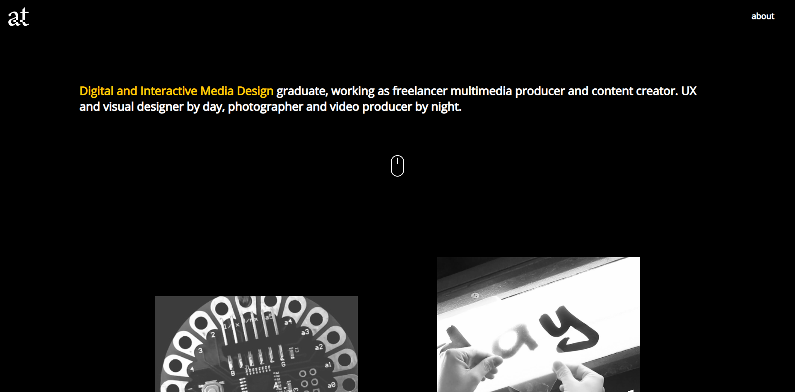

← all projects
Portfolio Website Prototype
This is a project that I made for a student that recently graduated looking for a new portfolio website. It was my first project with a client on my own as a web designer and developer.
- 2019
- Web Design, Development
- HTML, SCSS, JavaScript, Git
see website

The website was developped with HTML, SCSS and JavaScript (ES6, jQuery, TweenMax) including inspiration from Codrops. I used AJAX transitions made with Highway and the web application bundler Parcel to configure the code.